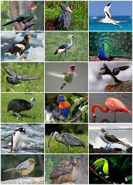
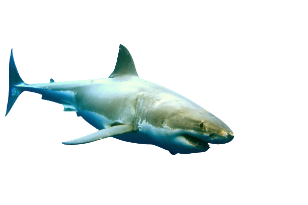
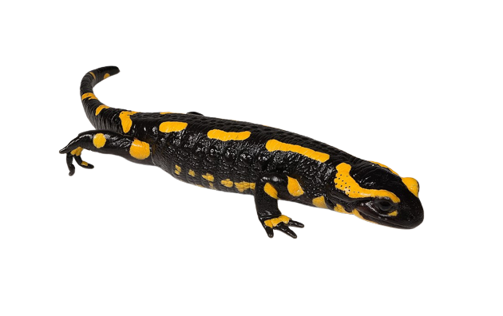
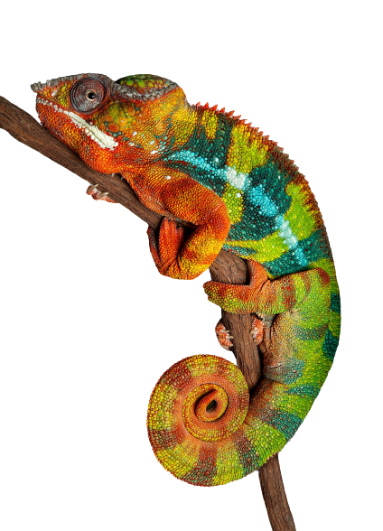
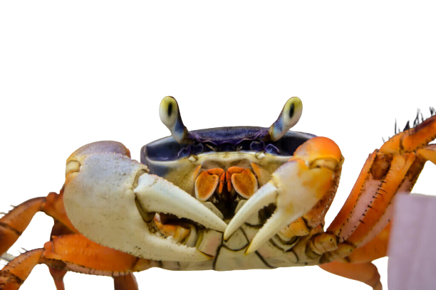
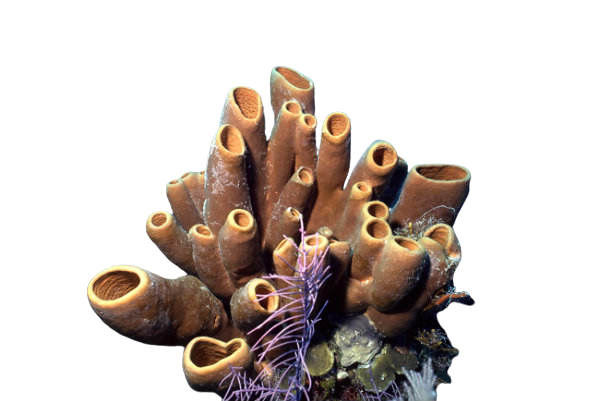

Animais Vetebrados!!
Logo a baixo veja alguns exemplos de animais vertebrado:
-
Peixes
Os peixes são animais vertebrados que vivem exclusivamente no ambiente aquático. Possuem diferentes tamanhos, formatos e cores, sendo animais de grande importância econômica, uma vez que são usados na nossa alimentação, em práticas como pesca esportiva e também na criação em aquários, por exemplo.
-
Anfíbios

Os anfíbios constituem uma classe de animais vertebrados, ectotérmicos que não possuem bolsa amniótica agrupados na classe Amphibia. A característica mais marcante dos seres vivos da classe é o seu ciclo de vida dividido em duas fases: uma aquática e outra terrestre, apesar de haver exceções.
-
Répteis

Os répteis constituem uma classe de animais vertebrados tetrápodes e ectotérmicos, ou seja, não possuem temperatura corporal constante. São todos amniotas, característica que lhes permitiu ficarem independentes da água para reprodução, ao contrário dos anfíbios.
-
Aves
Aves são uma classe de seres vivos vertebrados endotérmicos caracterizada pela presença de penas, um bico sem dentes, oviparidade de casca rígida, elevado metabolismo, um coração com quatro câmaras e um esqueleto pneumático resistente e leve.
-
Mamiferos
Os mamíferos são animais vertebrados do filo Chordata, conhecidos, principalmente, por apresentarem pelos e glândulas mamárias. A presença de diafragma e dentes diferenciados também são características típicas dos mamíferos. Atualmente, são conhecidas mais de 5.300 espécies, dentre as quais se inclui a espécie humana..
Alguns tipos de Peixes!!
-
Arraias
Peixe de esqueleto cartilaginoso, raiídeo, de corpo achatado e romboidal e cauda larga e delgada, classificados na infraclasse Batoidea da classe Elasmobranchii, grupo que também contêm os tubarões.
-
Cavalo-marinho
Hippocampus é um gênero de peixes ósseos, pertencente à família Syngnathidae, de águas marinhas temperadas e tropicais que engloba as espécies conhecidas pelo nome comum de cavalo-marinho.
-
Tubarões
Tubarão ou cação é um tipo de peixe de esqueleto cartilaginoso e um corpo hidrodinâmico pertencente à superordem Selachimorpha. Os primeiros tubarões conhecidos viveram há aproximadamente 400 milhões de anos.
-
Lampreias
nome comum dado a diversas espécies de peixes ciclóstomos de água doce ou anádromos, com forma de enguias, mas sem maxilas, pertencentes à família Petromyzontidae da ordem dos Petromyzontiformes.
Alguns tipos de Anfíbios!!
-
Pereraca

uma designação genérica de anfíbios da ordem Anura da família Hylidae, Pelodryadidae ou Phyllomedusidae. No Brasil também é conhecida por rela. É um anfíbio do grupo ao qual pertencem também os sapos e as rãs.
-
Salamandras
são um grupo de anfíbios tipicamente caracterizados por sua aparência de lagarto, com corpos esguios, focinhos rombudos, membros curtos projetando-se em ângulos retos com o corpo e a presença de uma cauda tanto nas larvas quanto nos adultos.
-
Sapos
Sapo é uma designação genérica de anfíbios da ordem Anura predominantemente terrestres, com pele rugosa, e glândulas parotoides semelhantes a verrugas. É usado especialmente em relação a membros da família Bufonidae.
-
Tritões
 ]
]
Tritão é o nome comum dado a anfíbios pertencentes à subfamília Pleurodelinae. A característica comum a todas as espécies de tritão é a sua permanência prolongada em pontos de água doce durante a época de reprodução. Esta pode durar vários meses por ano, dependendo da espécie em questão.
Alguns tipos de Repteis!!
-
Camaleões
Camaleão refere-se a todos os répteis pertencentes à família Chamaeleonidae. É uma das mais conhecidas famílias de lagartos, distribuídos na África, sul da Europa e da Ásia.
-
Cobras
são répteis poiquilotérmicos sem patas, pertencentes à subordem Serpentes, ou Ophidia. São bastante próximos dos lagartos, com os quais partilham a ordem Squamata.
-
Jabutis
Os jabutis são répteis pertencentes à Ordem Testudines, da família Testudinidae (como as tartarugas e os cágados) e do gênero Chelonoidis. Na América do Sul, os jabutis são representados por quatro espécies: Chelonoidis chilensis, Chelonoidis nigra, Chelonoidis carbonaria e Chelonoidis denticulata.
-
Jacarés]
Jacaré também chamado aligátor e caimão, são crocodilianos da família Alligatoridae, semelhantes aos crocodilos, dos quais se distinguem pela cabeça mais curta e larga.
Alguns tipos de Aves!!
-
Beija-flor

também denominados colibris, são termos comuns que se referem à qualquer uma de 362 espécies classificadas dentro de 113 gêneros reconhecidos, Classificação superior: Apodiformes.
-
Galinhas
Galinha e Galo são, respectivamente, a fêmea e o macho da espécie Gallus gallus domesticus de aves galiformes e fasianídeas. Os juvenis são chamados de frangos, e os filhotes, de pintos, pintinhos ou pintainhos. Estas aves possuem bico pequeno, crista carnuda, pernas escamosas e asas curtas e largas.
-
Papagaios
Psittacidae é uma família de aves pertencentes à ordem dos Psittaciformes, que compreende a espécies de papagaios e periquitos e as araras, entre outros. É uma das três famílias dos chamados "papagaios verdadeiros". Compreende 37 gêneros e 175 espécies das subfamílias Psittacinae e Arinae.
-
Pinguins]
uma ave da família Spheniscidae, altamente modificadas para a uma vida aquática, sendo suas asas adaptadas para promover impulso através da água.
Alguns tipos de Mamíferos!!
-
Baleia
Misticeto é um grupo monofilético que pertence à ordem Cetacea, a qual compreende animais terrestres que, ao longo da evolução, retornaram ao ambiente aquático, tendo esse retorno sido marcado pela mudança gradual da posição das narinas.
-
Gatos
O gato ou gato doméstico é um mamífero carnívoro da família dos felídeos, muito popular como animal de estimação. Ocupando o topo da cadeia alimentar, é predador natural de diversos animais, como roedores, pássaros, lagartixas e alguns insetos.
-
Macacos]
Macaco é um termo de origem africana utilizado como designação comum a todas as espécies de símios ou primatas antropoides. É aplicada restritivamente no Brasil aos cebídeos em geral. No sentido estrito, "macaco" refere-se às espécies de primatas pertencentes ao género Macaco.
-
Morcegos
O morcego é um animal mamífero da ordem Chiroptera, cujos integrantes apresentam uma fina membrana de pele entre os dedos, a qual se estende até as patas e se conecta às laterais do corpo, formando as asas. Distinguem-se das aves, pois estas possuem penas suportadas por ossos.
Animais Invetebrados!!
Logo a baixo veja alguns exemplos de animais invertebrado:
-
artropodes
Os artrópodes são invertebrados que possuem patas articuladas, tem uma carapaça protetora externa, que é o seu esqueleto. Ao crescer, eles fazem a muda que nada mais é do que abandonar o esqueleto velho e pequeno e fabricar outro, novo e maior.
-
Anelídeos
Anelídeos, também conhecido como vermes segmentados ou vermes anelares, é um vasto filo, com mais de 17.000 espécies incluindo vermes, minhocas e sanguessugas. Estes animais podem ser encontrados tanto em ambientes terrestres quanto aquáticos.
-
Cnidários

ACnidários ou celenterados (filo Cnidaria) são organismos pluricelulares que vivem em ambientes aquáticos, sendo a grande maioria marinha. Existem mais de 11.000 espécies de cnidários em todo o mundo. Os principais representantes do grupo são as águas-vivas, os corais, as anêmonas-do-mar, as hidras e as caravelas.
-
Equinodermos
Os equinodermos são organismos eucariontes, possuindo carioteca e organelas membranosas e são seres pluricelulares (muitas células). Podem ser organismos de vida livre, possuindo capacidade de locomoção como as estrelas-do-mar ou podem ser organismos sésseis como os lírios do mar que não possuem capacidade locomotora.
-
Moluscos
Os moluscos constituem um grande filo de animais invertebrados, marinhos, de água doce ou terrestres. O filo Mollusca é o segundo filo com a maior diversidade de espécies, depois dos Artrópodes, e inclui uma variedade de animais muito familiares, como as ostras, as lulas, os polvos e os caramujos.
-
Nematelmintos
Nematoda, nematelmintos, ou ainda nematelmintas, são um filo de animais cilíndricos espetacularmente alongados. São animais triblásticos, protostômios, pseudocelomados. Seu corpo cilíndrico, alongado e não segmentado exibe simetria bilateral.
-
Plateomintos

Platyhelminthes, comumente designados por platelmintes, platelmintas, platelmintos ou vermes planos, é um filo de invertebrados com simetria bilateral, não-segmentados, protostómios, de corpo mole e relativamente simples. A par com os nematelmintas e anelídeos, são considerados vermes.
-
Poríferos

Porifera é um filo do reino Animalia, onde se enquadram os animais conhecidos como esponjas. As esponjas são organismos multicelulares sésseis que apresentam um sistema aquífero de canais e poros que gera correntes de água dirigidas por células flageladas características: os coanócitos.
Alguns tipos de Artropodes!!
-
Aranhas
Aranhas são artrópodes, com corpo dividido em cefalotórax e abdômen, oito pernas, dois pedipalpos, e não apresentam antenas. Todas as aranhas produzem seda, porém nem todas produzem teias. As teias podem ser usadas para capturar alimentos. Aranhas são animais carnívoros.
-
Abelhas
Abelhas são insetos voadores, conhecidos pelo seu importante papel na polinização. Pertencem à ordem Hymenoptera, da superfamília Apoidea, subgrupo Anthophila, e são aparentados das vespas e formigas.
-
Caranguiejos
OBrachyura é uma infraordem de crustáceos que representa os “caranguejos verdadeiros”, ou braquiúros, sendo composta por caranguejos e siris. Essa infraordem pertence à subordem dos pleocyemata que agrupa caranguejos, lagostas e alguns camarões.
Alguns tipos de Anelídeos!!
-
Minhocas
As minhocas são animais anelídeos, da subclasse Oligochaeta, de simetria bilateral, recobertos por uma fina cutícula pigmentada. Seu corpo cilíndrico é segmentado interna e externamente, mas os dois primeiros segmentos não são identificados externamente.
-
Sanguessugas
Uma sanguessuga é um anelídeo da classe ou infraclasse Hirudinea que se alimenta geralmente do sangue de outros animais, embora muitas sanguessugas sejam predadoras carnívoras e não hematófagas. São animais hermafroditas, não possuem cerdas e possuem ventosas para sua fixação.
Alguns tipos de Cnidários!!
-
Água-viva:
Medusozoa é um agrupamento taxonómico que inclui as medusas, mães d'água, águas-vivas ou alforrecas, formas de vida livre dos cnidários adultos, que se encontram nas classes Scyphozoa, Hydrozoa e Cubozoa. Quase todas as medusas vivem nos oceanos, como componentes do zooplâncton.
-
Caravela:
A caravela-portuguesa é o único organismo em colônia heteromorfa, no grupo dos cnidários. Ou seja, são seres que vivem em colônia, isto é, estão conectados anatomicamente e não sendo um único ser. E são divididos em duas partes: região subnatural e região natural, as duas estando opostas.
Alguns tipos de Equinodermos!!
-
Estrelas-do-mar:
A estrela-do-mar é um animal equinoderme em forma de estrela pertencente à classe Asteroidea e ao subfilo Asterozoa Domínio: Eukaryota Filo: Echinodermata.
-
Ouriços-do-mar:
Echinoidea é uma classe de organismos pertencentes ao filo Echinodermata que agrupa invertebrados marinhos dioicos de corpo globoso ou disciforme, geralmente espinhosos, com 3-10 cm de diâmetro, revestidos por um tegumento coriáceo.
Alguns tipos de Moluscos!!
-
Caramujos:
Caramujo é a denominação vernácula, em português, para vários moluscos marinhos e não-marinhos da classe Gastropoda, possuidores de brânquias ou de pulmões
-
Lulas:
Teuthida é uma ordem zoológica da classe dos cefalópodes, subclasse Coleoidea. É constituída por moluscos marinhos, nomeadamente pelas lulas e chocos, cujo comprimento raramente atinge mais do que 60 cm, mas já foram identificadas lulas-colossais com mais 18 metros.
Alguns tipos de Nematelmintos!!
-
Ancylostoma:
Ancylostoma é um gênero de nematóides que inclui algumas espécies de ancilostomídeos. As espécies incluem: Ancylostoma braziliense, comumente infecta gatos, popularmente conhecido no Brasil como bicho-geográfico Ancylostoma caninum, comumente infecta cães.
-
Lombrigas:
A ascaridíase, mais conhecida como lombriga, é uma parasitose intestinal comum em crianças. Ela é transmitida pela ingestão de água ou de alimentos (verduras, frutas e legumes) contaminados com os ovos do parasita, que se alojam no intestino delgado e podem provocar sintomas muitos incômodos.
Alguns tipos de Plateomintos!!
-
Pseudoceros dimidiatus:
Pseudoceros dimidiatus, o platelminto dividido ou platelminto do tigre, é uma espécie de platelminto do gênero Pseudoceros, pertencente à família Pseudocerotidae.
-
Schistosoma:
Schistosoma é o género de platelmintos tremátodes responsável pela esquistossomose, uma parasitose grave que causa milhares de mortes por ano. Como todos os platelmintos o tubo digestivo do Schistosoma é incompleto e tem sistemas de órgãos muito rudimentares.
Alguns tipos de Poríferos!!
-
Esponjas:
Pseudoceros dimidiatus, o platelminto dividido ou platelminto do tigre, é uma espécie de platelminto do gênero Pseudoceros, pertencente à família Pseudocerotidae.